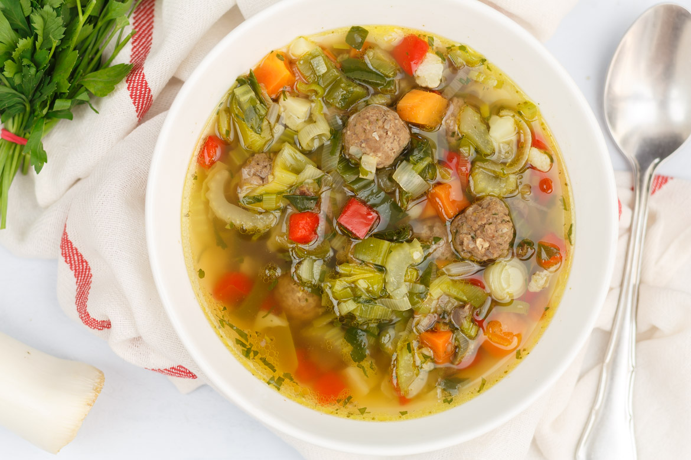

Snelle basis groentesoep
Ingredienten
- 300 gr rundergehakt
- snuf paprikapoeder
- snuf knoflookpoeder
- snuf peper en zout
- 1200 ml water
- 2 blokjes groentebouillon
- 250 gr soepgroenten, (fijngesneden)
- 1 grote ui
- 1 klontje boter
Bereidingswijze
- Meng het gehakt met de kruiden en draai er kleine balletjes van.
- Snipper de ui.
- Smelt de boter in een soeppan.
- Fruit de ui aan tot deze bruin begint te kleuren.
- Voeg de soepgroente toe en bak 1 minuutje mee.
- Voeg dan het water en de groentebouillon blokjes toe en breng aan de kook.
- Voeg de gehaktballetjes toe en laat de soep nog 10 minuutjes zachtjes doorkoken.
